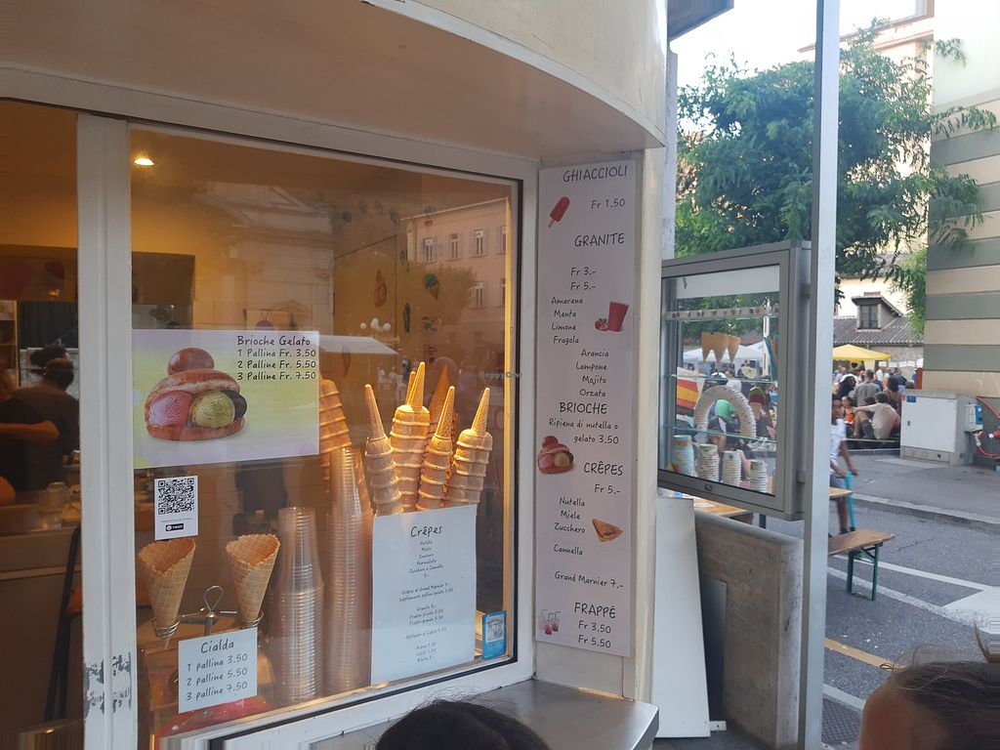

LA GELATERIA SORRISO ICE CREAM
Nasce nel cuore della città di Catania nel 1850. Da 6 generazioni il nome della nostra gelateria riprende il cognome dell’antico fondatore, Giorgio Sorriso. Grazie alla sua determinazione e fantasia, riuscì a presentare creazione con gusti di un elevatissima qualità. Ad oggi, siamo ancora la gelateria più rinomata della Sicilia e i detentori dell’ultimo Gambero Rosso 2024.